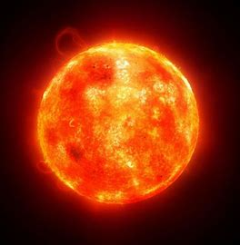
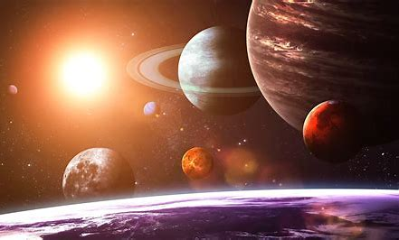
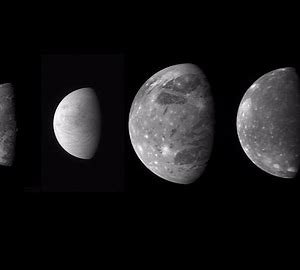
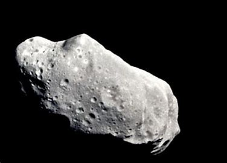
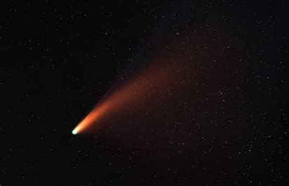

Our Solar System
A vast cosmic dance of planets, moons, and celestial bodies

Our Solar System is a vast and intricate cosmic dance, orchestrated by the gravitational pull of our central star, the Sun. It's a celestial neighborhood that has captivated human imagination for millennia and continues to reveal its secrets as we explore further into space.
Quick Facts
Age
Approximately 4.6 billion years
Formation
Formed from a giant molecular cloud
Length
About 287.46 billion kilometers
Width
Approximately 0.3 light-years across
Location
Orion Arm of the Milky Way galaxy
Speed
Orbits the galactic center at about 220 km/s
Components of Our Solar System

The Sun
Our central star, providing heat and light

Planets
8 major planets orbiting the Sun

Dwarf Planets
5 known dwarf planets, including Pluto

Moons
Over 200 known moons orbiting planets

Asteroids
Millions of rocky bodies, mainly in the asteroid belt

Comets
Icy bodies that develop tails when near the Sun
Fun Facts
- The Sun contains 99.86% of the Solar System's mass.
- There are more moons in our Solar System than planets.
- The Kuiper Belt contains countless icy bodies and dwarf planets.
- The hypothetical Oort Cloud may contain trillions of comets.
Ready to Explore Further?
Dive deeper into the fascinating world of our cosmic neighbors.
Explore the Planets